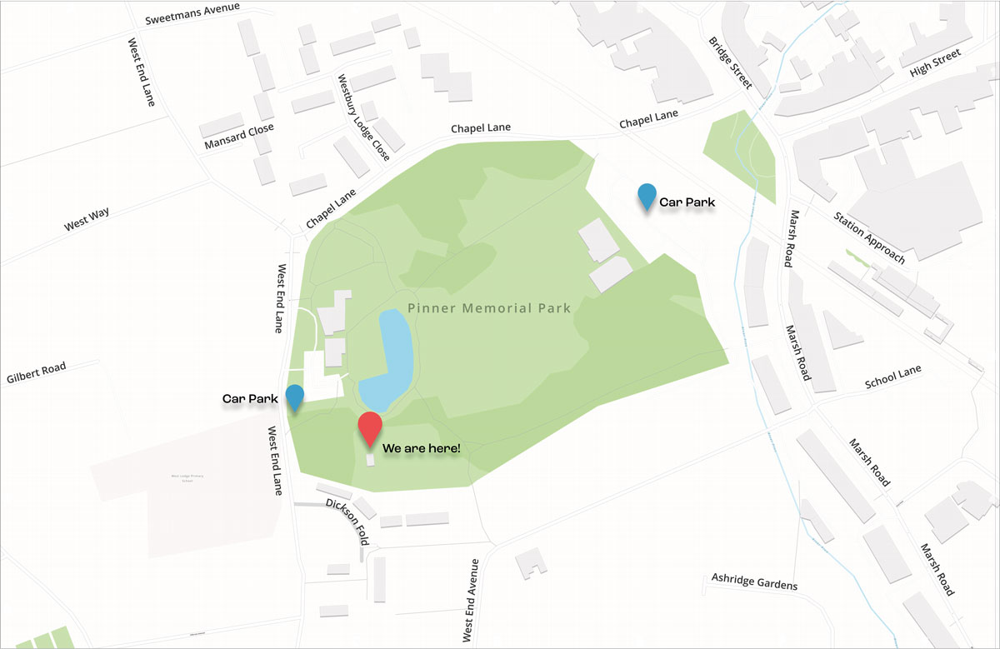

Visit
The green is inside Pinner Memorial Park, beside the car park near the duck pond. Parking around the park needs a little local knowledge, so here it is.
Where the club is
Inside the Memorial Park.
The postcode is HA5 1AE. The club is next to Daisy's in the Park, by the lake and the ornamental fountain, beside the car park near the duck pond.
- Pinner Memorial Park, West End Lane, Pinner HA5 1AE
- Play runs from 11am to dusk on most days through the season.
- Visitors are welcome to call in and watch a game.

Parking
The roads around the park are a controlled zone.
Worth reading once before your first visit — it is straightforward, but the restrictions are unusual.
- The club sits inside the Pinner Controlled Parking Zone. Residents' bays and most single yellow lines are restricted between 11am and midday. Outside that hour, visitors may use the bays.
- There is a pay and display car park adjacent to the club, space permitting.
- The yellow zigzags directly outside that car park on West End Lane are restricted weekdays 3pm to 5pm only; outside those hours and at weekends you may park on them. Never on the zebra crossing zigzags.
- There is usually ample free parking in the residents' bays on West Way and West End Avenue — a couple of minutes' walk.
Getting in touch
The club does not publish a telephone number or an email address. Its own enquiry form is the route it asks you to use, and it goes to the club directly.